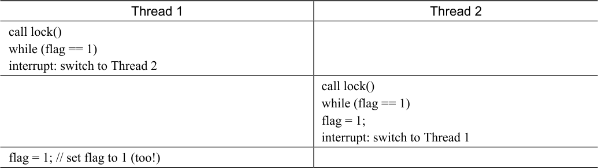

通过对并发的介绍，我们看到了并发编程的一个最基本问题：我们希望原子式执行一系列指令，但由于单处理器上的中断（或者多个线程在多处理器上并发执行），我们做不到。本章介绍了锁（lock），直接解决这一问题。程序员在源代码中加锁，放在临界区周围，保证临界区能够像单条原子指令一样执行。
28.1 锁的基本思想¶
举个例子，假设临界区像这样，典型的更新共享变量：
balance = balance + 1;
当然，其他临界区也是可能的，比如为链表增加一个元素，或对共享结构的复杂更新操作。为了使用锁，我们给临界区增加了这样一些代码：
lock_t mutex; // some globally-allocated lock 'mutex'
...
lock(&mutex);
balance = balance + 1;
unlock(&mutex);
锁就是一个变量，因此我们需要声明一个某种类型的锁变量（lock variable，如上面的mutex），才能使用。这个锁变量（简称锁）保存了锁在某一时刻的状态。它要么是可用的（available，或unlocked，或free），表示没有线程持有锁，要么是被占用的（acquired，或locked，或held），表示有一个线程持有锁，正处于临界区。我们也可以保存其他的信息，比如持有锁的线程，或请求获取锁的线程队列，但这些信息会隐藏起来，锁的使用者不会发现。
lock()和unlock()函数的语义很简单。调用lock()尝试获取锁，如果没有其他线程持有锁（即它是可用的），该线程会获得锁，进入临界区。这个线程有时被称为锁的持有者（owner）。如果另外一个线程对相同的锁变量（本例中的mutex）调用lock()，因为锁被另一线程持有，该调用不会返回。这样，当持有锁的线程在临界区时，其他线程就无法进入临界区。
锁的持有者一旦调用unlock()，锁就变成可用了。如果没有其他等待线程（即没有其他线程调用过lock()并卡在那里），锁的状态就变成可用了。如果有等待线程（卡在lock()里），其中一个会（最终）注意到（或收到通知）锁状态的变化，获取该锁，进入临界区。
锁为程序员提供了最小程度的调度控制。我们把线程视为程序员创建的实体，但是被操作系统调度，具体方式由操作系统选择。锁让程序员获得一些控制权。通过给临界区加锁，可以保证临界区内只有一个线程活跃。锁将原本由操作系统调度的混乱状态变得更为可控。
28.2 Pthread 锁¶
POSIX 库将锁称为互斥量（mutex），因为它被用来提供线程之间的互斥。即当一个线程在临界区，它能够阻止其他线程进入直到本线程离开临界区。因此，如果你看到下面的POSIX 线程代码，应该理解它和上面的代码段执行相同的任务（我们再次使用了包装函数来检查获取锁和释放锁时的错误）。
pthread_mutex_t lock = PTHREAD_MUTEX_INITIALIZER;
Pthread_mutex_lock(&lock); // wrapper for pthread_mutex_lock()
balance = balance + 1;
Pthread_mutex_unlock(&lock);
你可能还会注意到，POSIX 的lock 和unlock 函数会传入一个变量，因为我们可能用不同的锁来保护不同的变量。这样可以增加并发：不同于任何临界区都使用同一个大锁（粗粒度的锁策略），通常大家会用不同的锁保护不同的数据和结构，从而允许更多的线程进入临界区（细粒度的方案）。
28.3 实现一个锁¶
我们已经从程序员的角度，对锁如何工作有了一定的理解。那如何实现一个锁呢？我们需要什么硬件支持？需要什么操作系统的支持？本章下面的内容将解答这些问题。
关键问题：怎样实现一个锁
如何构建一个高效的锁？高效的锁能够以低成本提供互斥，同时能够实现一些特性，我们下面会讨论。需要什么硬件支持？什么操作系统支持？
我们需要硬件和操作系统的帮助来实现一个可用的锁。近些年来，各种计算机体系结构的指令集都增加了一些不同的硬件原语，我们不研究这些指令是如何实现的（毕竟，这是计算机体系结构课程的主题），只研究如何使用它们来实现像锁这样的互斥原语。我们也会研究操作系统如何发展完善，支持实现成熟复杂的锁库。
28.4 评价锁¶
在实现锁之前，我们应该首先明确目标，因此我们要问，如何评价一种锁实现的效果。为了评价锁是否能工作（并工作得好），我们应该先设立一些标准。第一是锁是否能完成它的基本任务，即提供互斥（mutual exclusion）。最基本的，锁是否有效，能够阻止多个线程进入临界区？
第二是公平性（fairness）。当锁可用时，是否每一个竞争线程有公平的机会抢到锁？用另一个方式来看这个问题是检查更极端的情况：是否有竞争锁的线程会饿死（starve），一直无法获得锁？
最后是性能（performance），具体来说，是使用锁之后增加的时间开销。有几种场景需要考虑。一种是没有竞争的情况，即只有一个线程抢锁、释放锁的开支如何？另外一种是一个CPU 上多个线程竞争，性能如何？最后一种是多个CPU、多个线程竞争时的性能。通过比较不同的场景，我们能够更好地理解不同的锁技术对性能的影响，下面会进行介绍。
28.5 控制中断¶
最早提供的互斥解决方案之一，就是在临界区关闭中断。这个解决方案是为单处理器系统开发的。代码如下：
void lock() {
DisableInterrupts();
}
void unlock() {
EnableInterrupts();
}
假设我们运行在这样一个单处理器系统上。通过在进入临界区之前关闭中断（使用特殊的硬件指令），可以保证临界区的代码不会被中断，从而原子地执行。结束之后，我们重新打开中断（同样通过硬件指令），程序正常运行。
这个方法的主要优点就是简单。显然不需要费力思考就能弄清楚它为什么能工作。没有中断，线程可以确信它的代码会继续执行下去，不会被其他线程干扰。
遗憾的是，缺点很多。首先，这种方法要求我们允许所有调用线程执行特权操作（打开关闭中断），即信任这种机制不会被滥用。众所周知，如果我们必须信任任意一个程序，可能就有麻烦了。这里，麻烦表现为多种形式：第一，一个贪婪的程序可能在它开始时就调用lock()，从而独占处理器。更糟的情况是，恶意程序调用lock()后，一直死循环。后一种情况，系统无法重新获得控制，只能重启系统。关闭中断对应用要求太多，不太适合作为通用的同步解决方案。
第二，这种方案不支持多处理器。如果多个线程运行在不同的CPU 上，每个线程都试图进入同一个临界区，关闭中断也没有作用。线程可以运行在其他处理器上，因此能够进入临界区。多处理器已经很普遍了，我们的通用解决方案需要更好一些。
第三，关闭中断导致中断丢失，可能会导致严重的系统问题。假如磁盘设备完成了读取请求，但CPU 错失了这一事实，那么，操作系统如何知道去唤醒等待读取的进程？
最后一个不太重要的原因就是效率低。与正常指令执行相比，现代CPU 对于关闭和打开中断的代码执行得较慢。
基于以上原因，只在很有限的情况下用关闭中断来实现互斥原语。例如，在某些情况下操作系统本身会采用屏蔽中断的方式，保证访问自己数据结构的原子性，或至少避免某些复杂的中断处理情况。这种用法是可行的，因为在操作系统内部不存在信任问题，它总是信任自己可以执行特权操作。
补充：DEKKER 算法和PETERSON 算法
20 世纪60 年代，Dijkstra 向他的朋友们提出了并发问题，他的数学家朋友Theodorus Jozef Dekker想出了一个解决方法。不同于我们讨论的需要硬件指令和操作系统支持的方法，Dekker 的算法（Dekker’s algorithm）只使用了load 和store（早期的硬件上，它们是原子的）。
Peterson 后来改进了Dekker 的方法[P81]。同样只使用load 和store，保证不会有两个线程同时进入临界区。以下是Peterson 算法（Peterson’s algorithm，针对两个线程），读者可以尝试理解这些代码吗？flag 和turn 变量是用来做什么的？
int flag[2];
int turn;
void init() {
flag[0] = flag[1] = 0; // 1->thread wants to grab lock
turn = 0; // whose turn? (thread 0 or 1?)
}
void lock() {
flag[self] = 1; // self: thread ID of caller
turn = 1 - self; // make it other thread's turn
while ((flag[1-self] == 1) && (turn == 1 - self))
; // spin-wait
}
void unlock() {
flag[self] = 0; // simply undo your intent
}
一段时间以来，出于某种原因，大家都热衷于研究不依赖硬件支持的锁机制。后来这些工作都没有太多意义，因为只需要很少的硬件支持，实现锁就会容易很多（实际在多处理器的早期，就有这些硬件支持）。而且上面提到的方法无法运行在现代硬件（应为松散内存一致性模型），导致它们更加没有用处。更多的相关研究也湮没在历史中……
28.6 测试并设置指令（原子交换）¶
因为关闭中断的方法无法工作在多处理器上，所以系统设计者开始让硬件支持锁。最早的多处理器系统，像20 世纪60 年代早期的Burroughs B5000[M82]，已经有这些支持。今天所有的系统都支持，甚至包括单CPU 的系统。
最简单的硬件支持是测试并设置指令（test-and-set instruction），也叫作原子交换（atomic exchange）。为了理解test-and-set 如何工作，我们首先实现一个不依赖它的锁，用一个变量标记锁是否被持有。
在第一次尝试中（见图 28.1），想法很简单：用一个变量来标志锁是否被某些线程占用。第一个线程进入临界区，调用lock()，检查标志是否为1（这里不是1），然后设置标志为1，表明线程持有该锁。结束临界区时，线程调用unlock()，清除标志，表示锁未被持有。
typedef struct lock_t { int flag; } lock_t;
void init(lock_t *mutex) {
// 0 -> lock is available, 1 -> held
mutex->flag = 0;
}
void lock(lock_t *mutex) {
while (mutex->flag == 1) // TEST the flag
; // spin-wait (do nothing)
mutex->flag = 1; // now SET it!
}
void unlock(lock_t *mutex) {
mutex->flag = 0;
}
图28.1 第一次尝试：简单标志
当第一个线程正处于临界区时，如果另一个线程调用lock()，它会在while 循环中自旋等待（spin-wait)，直到第一个线程调用unlock()清空标志。然后等待的线程会退出while 循环，设置标志，执行临界区代码。
遗憾的是，这段代码有两个问题：正确性和性能。这个正确性问题在并发编程中很常见。假设代码按照表28.1 执行，开始时flag=0。

表28.1 追踪：没有互斥
表格文字
| Thread 1 | Thread 2 |
|---|---|
| call lock() while (flag == 1) interrupt: switch to Thread 2 | |
| call lock() while (flag == 1) flag = 1; interrupt: switch to Thread 1 | |
| flag = 1; // set flag to 1 (too!) |
从这种交替执行可以看出，通过适时的（不合时宜的？）中断，我们很容易构造出两个线程都将标志设置为1，都能进入临界区的场景。这种行为就是专家所说的“不好”，我们显然没有满足最基本的要求：互斥。
性能问题（稍后会有更多讨论）主要是线程在等待已经被持有的锁时，采用了自旋等待（spin-waiting）的技术，就是不停地检查标志的值。自旋等待在等待其他线程释放锁的时候会浪费时间。尤其是在单处理器上，一个等待线程等待的目标线程甚至无法运行（至少在上下文切换之前）！我们要开发出更成熟的解决方案，也应该考虑避免这种浪费。
28.7 实现可用的自旋锁¶
尽管上面例子的想法很好，但没有硬件的支持是无法实现的。幸运的是，一些系统提供了这一指令，支持基于这种概念创建简单的锁。这个更强大的指令有不同的名字：在SPARC上，这个指令叫ldstub（load/store unsigned byte，加载/保存无符号字节）；在x86 上，是xchg（atomic exchange，原子交换）指令。但它们基本上在不同的平台上做同样的事，通常称为测试并设置指令（test-and-set）。我们用如下的C 代码片段来定义测试并设置指令做了什么：
int TestAndSet(int *old_ptr, int new) {
int old = *old_ptr; // fetch old value at old_ptr
*old_ptr = new; // store 'new' into old_ptr
return old; // return the old value
}
测试并设置指令做了下述事情。它返回old_ptr 指向的旧值，同时更新为new 的新值。当然，关键是这些代码是原子地（atomically）执行。因为既可以测试旧值，又可以设置新值，所以我们把这条指令叫作“测试并设置”。这一条指令完全可以实现一个简单的自旋锁（spin lock），如图28.2 所示。或者你可以先尝试自己实现，这样更好！
我们来确保理解为什么这个锁能工作。首先假设一个线程在运行，调用lock()，没有其他线程持有锁，所以flag 是0。当调用TestAndSet(flag, 1)方法，返回0，线程会跳出while循环，获取锁。同时也会原子的设置flag 为1，标志锁已经被持有。当线程离开临界区，调用unlock()将flag 清理为0。
typedef struct lock_t {
int flag;
} lock_t;
void init(lock_t *lock) {
// 0 indicates that lock is available, 1 that it is held
lock->flag = 0;
}
void lock(lock_t *lock) {
while (TestAndSet(&lock->flag, 1) == 1)
; // spin-wait (do nothing)
}
void unlock(lock_t *lock) {
lock->flag = 0;
}
图28.2 利用测试并设置的简单自旋锁
第二种场景是，当某一个线程已经持有锁（即flag 为1）。本线程调用lock()，然后调用TestAndSet(flag, 1)，这一次返回1。只要另一个线程一直持有锁，TestAndSet()会重复返回1，本线程会一直自旋。当flag 终于被改为0，本线程会调用TestAndSet()，返回0 并且原子地设置为1，从而获得锁，进入临界区。
将测试（test 旧的锁值）和设置（set 新的值）合并为一个原子操作之后，我们保证了只有一个线程能获取锁。这就实现了一个有效的互斥原语！
你现在可能也理解了为什么这种锁被称为自旋锁（spin lock）。这是最简单的一种锁，一直自旋，利用CPU 周期，直到锁可用。在单处理器上，需要抢占式的调度器（preemptive scheduler，即不断通过时钟中断一个线程，运行其他线程）。否则，自旋锁在单CPU 上无法使用，因为一个自旋的线程永远不会放弃CPU。
提示：从恶意调度程序的角度想想并发
通过这个例子，你可能会明白理解并发执行所需的方法。你应该试着假装自己是一个恶意调度程序（malicious scheduler），会最不合时宜地中断线程，从而挫败它们在构建同步原语方面的微弱尝试。你是多么坏的调度程序！虽然中断的确切顺序也许未必会发生，但这是可能的，我们只需要以此证明某种特定的方法不起作用。恶意思考可能会有用！（至少有时候有用。）
28.8 评价自旋锁¶
现在可以按照之前的标准来评价基本的自旋锁了。锁最重要的一点是正确性（correctness）：能够互斥吗？答案是可以的：自旋锁一次只允许一个线程进入临界区。因此，这是正确的锁。
下一个标准是公平性（fairness）。自旋锁对于等待线程的公平性如何呢？能够保证一个等待线程会进入临界区吗？答案是自旋锁不提供任何公平性保证。实际上，自旋的线程在竞争条件下可能会永远自旋。自旋锁没有公平性，可能会导致饿死。
最后一个标准是性能（performance）。使用自旋锁的成本是多少？为了更小心地分析，我们建议考虑几种不同的情况。首先，考虑线程在单处理器上竞争锁的情况。然后，考虑这些线程跨多个处理器。
对于自旋锁，在单CPU 的情况下，性能开销相当大。假设一个线程持有锁进入临界区时被抢占。调度器可能会运行其他每一个线程（假设有N−1 个这种线程）。而其他线程都在竞争锁，都会在放弃CPU 之前，自旋一个时间片，浪费CPU 周期。
但是，在多CPU 上，自旋锁性能不错（如果线程数大致等于CPU 数）。假设线程A 在CPU 1，线程B 在CPU 2 竞争同一个锁。线程A（CPU 1）占有锁时，线程B 竞争锁就会自旋（在CPU 2 上）。然而，临界区一般都很短，因此很快锁就可用，然后线程B 获得锁。自旋等待其他处理器上的锁，并没有浪费很多CPU 周期，因此效果不错。
28.9 比较并交换¶
某些系统提供了另一个硬件原语，即比较并交换指令（SPARC 系统中是compare-and-swap，x86 系统是compare-and-exchange）。图28.3 是这条指令的C 语言伪代码。
int CompareAndSwap(int *ptr, int expected, int new) {
int actual = *ptr;
if (actual == expected)
*ptr = new;
return actual;
}
图28.3 比较并交换
比较并交换的基本思路是检测ptr 指向的值是否和expected 相等；如果是，更新ptr 所指的值为新值。否则，什么也不做。不论哪种情况，都返回该内存地址的实际值，让调用者能够知道执行是否成功。
有了比较并交换指令，就可以实现一个锁，类似于用测试并设置那样。例如，我们只要用下面的代码替换lock()函数：
void lock(lock_t *lock) {
while (CompareAndSwap(&lock->flag, 0, 1) == 1)
; // spin
}
其余代码和上面测试并设置的例子完全一样。代码工作的方式很类似，检查标志是否为0，如果是，原子地交换为1，从而获得锁。锁被持有时，竞争锁的线程会自旋。
如果你想看看如何创建建C 可调用的x86 版本的比较并交换，下面的代码段可能有用（来自[S05])：
char CompareAndSwap(int *ptr, int old, int new) {
unsigned char ret;
// Note that sete sets a 'byte' not the word
__asm__ __volatile__ (
" lock\n"
" cmpxchgl %2,%1\n"
" sete %0\n"
: "=q" (ret), "=m" (*ptr)
: "r" (new), "m" (*ptr), "a" (old)
: "memory");
return ret;
}
最后，你可能会发现，比较并交换指令比测试并设置更强大。当我们在将来简单探讨无等待同步（wait-free synchronization）[H91]时，会用到这条指令的强大之处。然而，如果只用它实现一个简单的自旋锁，它的行为等价于上面分析的自旋锁。
28.10 链接的加载和条件式存储指令¶
一些平台提供了实现临界区的一对指令。例如MIPS 架构[H93]中，链接的加载（load-linked）和条件式存储（store-conditional）可以用来配合使用，实现其他并发结构。图28.4 是这些指令的C 语言伪代码。Alpha、PowerPC 和ARM 都提供类似的指令[W09]。
int LoadLinked(int *ptr) {
return *ptr;
}
int StoreConditional(int *ptr, int value) {
if (no one has updated *ptr since the LoadLinked to this address) {
*ptr = value;
return 1; // success!
} else {
return 0; // failed to update
}
}
图28.4 链接的加载和条件式存储
链接的加载指令和典型加载指令类似，都是从内存中取出值存入一个寄存器。关键区别来自条件式存储（store-conditional）指令，只有上一次加载的地址在期间都没有更新时，才会成功，（同时更新刚才链接的加载的地址的值）。成功时，条件存储返回1，并将ptr 指的值更新为value。失败时，返回0，并且不会更新值。
你可以挑战一下自己，使用链接的加载和条件式存储来实现一个锁。完成之后，看看下面代码提供的简单解决方案。试一下！解决方案如图28.5 所示。
lock()代码是唯一有趣的代码。首先，一个线程自旋等待标志被设置为0（因此表明锁没有被保持）。一旦如此，线程尝试通过条件存储获取锁。如果成功，则线程自动将标志值更改为1，从而可以进入临界区。
void lock(lock_t *lock) {
while (1) {
while (LoadLinked(&lock->flag) == 1)
; // spin until it's zero
if (StoreConditional(&lock->flag, 1) == 1)
return; // if set-it-to-1 was a success: all done
// otherwise: try it all over again
}
}
void unlock(lock_t *lock) {
lock->flag = 0;
}
图28.5 使用LL/SC 实现锁
提示：代码越少越好（劳尔定律）
程序员倾向于吹嘘自己使用大量的代码实现某功能。这样做本质上是不对的。我们应该吹嘘以很少的代码实现给定的任务。简洁的代码更易懂，缺陷更少。正如Hugh Lauer 在讨论构建一个飞行员操作系统时说：“如果给同样这些人两倍的时间，他们可以只用一半的代码来实现”[L81]。我们称之为劳尔定律（Lauer’s Law），很值得记住。下次你吹嘘写了多少代码来完成作业时，三思而后行，或者更好的做法是，回去重写，让代码更清晰、精简。
请注意条件式存储失败是如何发生的。一个线程调用lock()，执行了链接的加载指令，返回0。在执行条件式存储之前，中断产生了，另一个线程进入lock 的代码，也执行链接式加载指令，同样返回0。现在，两个线程都执行了链接式加载指令，将要执行条件存储。重点是只有一个线程能够成功更新标志为1，从而获得锁；第二个执行条件存储的线程会失败（因为另一个线程已经成功执行了条件更新），必须重新尝试获取锁。
在几年前的课上，一位本科生同学David Capel 给出了一种更为简洁的实现，献给那些喜欢布尔条件短路的人。看看你是否能弄清楚为什么它是等价的。当然它更短！
void lock(lock_t *lock) {
while (LoadLinked(&lock->flag)||!StoreConditional(&lock->flag, 1))
; // spin
}
28.11 获取并增加¶
最后一个硬件原语是获取并增加（fetch-and-add）指令，它能原子地返回特定地址的旧值，并且让该值自增一。获取并增加的C 语言伪代码如下：
在这个例子中，我们会用获取并增加指令，实现一个更有趣的ticket 锁，这是Mellor-Crummey和Michael Scott[MS91]提出的。图28.6 是lock 和unlock 的代码。
int FetchAndAdd(int *ptr) {
int old = *ptr;
*ptr = old + 1;
return old;
}
typedef struct lock_t {
int ticket;
int turn;
} lock_t;
void lock_init(lock_t *lock) {
lock->ticket = 0;
lock->turn = 0;
}
void lock(lock_t *lock) {
int myturn = FetchAndAdd(&lock->ticket);
while (lock->turn != myturn)
; // spin
}
void unlock(lock_t *lock) {
FetchAndAdd(&lock->turn);
}
图28.6 ticket 锁
不是用一个值，这个解决方案使用了ticket 和turn 变量来构建锁。基本操作也很简单：如果线程希望获取锁，首先对一个ticket 值执行一个原子的获取并相加指令。这个值作为该线程的“turn”（顺位，即myturn）。根据全局共享的lock->turn 变量，当某一个线程的（myturn== turn）时，则轮到这个线程进入临界区。unlock 则是增加turn，从而下一个等待线程可以进入临界区。
不同于之前的方法：本方法能够保证所有线程都能抢到锁。只要一个线程获得了ticket值，它最终会被调度。之前的方法则不会保证。比如基于测试并设置的方法，一个线程有可能一直自旋，即使其他线程在获取和释放锁。
28.12 自旋过多：怎么办¶
基于硬件的锁简单（只有几行代码）而且有效（如果高兴，你甚至可以写一些代码来验证），这也是任何好的系统或者代码的特点。但是，某些场景下，这些解决方案会效率低下。以两个线程运行在单处理器上为例，当一个线程（线程0）持有锁时，被中断。第二个线程（线程1）去获取锁，发现锁已经被持有。因此，它就开始自旋。接着自旋。
然后它继续自旋。最后，时钟中断产生，线程0 重新运行，它释放锁。最后（比如下次它运行时），线程1 不需要继续自旋了，它获取了锁。因此，类似的场景下，一个线程会一直自旋检查一个不会改变的值，浪费掉整个时间片！如果有N 个线程去竞争一个锁，情况会更糟糕。同样的场景下，会浪费N−1 个时间片，只是自旋并等待一个线程释放该锁。因此，我们的下一个问题是：
关键问题：怎样避免自旋
如何让锁不会不必要地自旋，浪费CPU 时间？
只有硬件支持是不够的。我们还需要操作系统支持！接下来看一看怎么解决这一问题。
28.13 简单方法：让出来吧，宝贝¶
硬件支持让我们有了很大的进展：我们已经实现了有效、公平（通过ticket 锁）的锁。但是，问题仍然存在：如果临界区的线程发生上下文切换，其他线程只能一直自旋，等待被中断的（持有锁的）进程重新运行。有什么好办法？
第一种简单友好的方法就是，在要自旋的时候，放弃CPU。正如Al Davis 说的“让出来吧，宝贝！”[D91]。图28.7 展示了这种方法。
void init() {
flag = 0;
}
void lock() {
while (TestAndSet(&flag, 1) == 1)
yield(); // give up the CPU
}
void unlock() {
flag = 0;
}
图28.7 测试并设置和让出实现的锁
在这种方法中，我们假定操作系统提供原语yield()，线程可以调用它主动放弃CPU，让其他线程运行。线程可以处于 3 种状态之一（运行、就绪和阻塞）。yield()系统调用能够让运行（running）态变为就绪（ready）态，从而允许其他线程运行。因此，让出线程本质上取消调度（deschedules）了它自己。
考虑在单CPU 上运行两个线程。在这个例子中，基于yield 的方法十分有效。一个线程调用lock()，发现锁被占用时，让出CPU，另外一个线程运行，完成临界区。在这个简单的例子中，让出方法工作得非常好。
现在来考虑许多线程（例如100 个）反复竞争一把锁的情况。在这种情况下，一个线程持有锁，在释放锁之前被抢占，其他99 个线程分别调用lock()，发现锁被抢占，然后让出CPU。假定采用某种轮转调度程序，这99 个线程会一直处于运行—让出这种模式，直到持有锁的线程再次运行。虽然比原来的浪费99 个时间片的自旋方案要好，但这种方法仍然成本很高，上下文切换的成本是实实在在的，因此浪费很大。
更糟的是，我们还没有考虑饿死的问题。一个线程可能一直处于让出的循环，而其他线程反复进出临界区。很显然，我们需要一种方法来解决这个问题。
28.14 使用队列：休眠替代自旋¶
前面一些方法的真正问题是存在太多的偶然性。调度程序决定如何调度。如果调度不合理，线程或者一直自旋（第一种方法），或者立刻让出CPU（第二种方法）。无论哪种方法，都可能造成浪费，也能防止饿死。
因此，我们必须显式地施加某种控制，决定锁释放时，谁能抢到锁。为了做到这一点，我们需要操作系统的更多支持，并需要一个队列来保存等待锁的线程。
简单起见，我们利用Solaris 提供的支持，它提供了两个调用：park()能够让调用线程休眠，unpark(threadID)则会唤醒threadID 标识的线程。可以用这两个调用来实现锁，让调用者在获取不到锁时睡眠，在锁可用时被唤醒。我们来看看图28.8 中的代码，理解这组原语的一种可能用法。
typedef struct lock_t {
int flag;
int guard;
queue_t *q;
} lock_t;
void lock_init(lock_t *m) {
m->flag = 0;
m->guard = 0;
queue_init(m->q);
}
void lock(lock_t *m) {
while (TestAndSet(&m->guard, 1) == 1)
; //acquire guard lock by spinning
if (m->flag == 0) {
m->flag = 1; // lock is acquired
m->guard = 0;
} else {
queue_add(m->q, gettid());
m->guard = 0;
park();
}
}
void unlock(lock_t *m) {
while (TestAndSet(&m->guard, 1) == 1)
; //acquire guard lock by spinning
if (queue_empty(m->q))
m->flag = 0; // let go of lock; no one wants it
else
unpark(queue_remove(m->q)); // hold lock (for next thread!)
m->guard = 0;
}
图28.8 使用队列，测试并设置、让出和唤醒的锁
在这个例子中，我们做了两件有趣的事。首先，我们将之前的测试并设置和等待队列结合，实现了一个更高性能的锁。其次，我们通过队列来控制谁会获得锁，避免饿死。
你可能注意到，guard 基本上起到了自旋锁的作用，围绕着flag 和队列操作。因此，这个方法并没有完全避免自旋等待。线程在获取锁或者释放锁时可能被中断，从而导致其他线程自旋等待。但是，这个自旋等待时间是很有限的（不是用户定义的临界区，只是在lock和unlock 代码中的几个指令），因此，这种方法也许是合理的。
第二点，你可能注意到在lock()函数中，如果线程不能获取锁（它已被持有），线程会把自己加入队列（通过调用gettid()获得当前的线程ID），将guard 设置为0，然后让出CPU。留给读者一个问题：如果我们在park()之后，才把guard 设置为0 释放锁，会发生什么呢？提示一下，这是有问题的。
你还可能注意到了很有趣一点，当要唤醒另一个线程时，flag 并没有设置为0。为什么呢？其实这不是错，而是必须的！线程被唤醒时，就像是从park()调用返回。但是，此时它没有持有guard，所以也不能将flag 设置为1。因此，我们就直接把锁从释放的线程传递给下一个获得锁的线程，期间flag 不必设置为0。
最后，你可能注意到解决方案中的竞争条件，就在park()调用之前。如果不凑巧，一个线程将要park，假定它应该睡到锁可用时。这时切换到另一个线程（比如持有锁的线程），这可能会导致麻烦。比如，如果该线程随后释放了锁。接下来第一个线程的park 会永远睡下去（可能）。这种问题有时称为唤醒/等待竞争（wakeup/waiting race）。为了避免这种情况，我们需要额外的工作。
Solaris 通过增加了第三个系统调用separk()来解决这一问题。通过setpark()，一个线程表明自己马上要park。如果刚好另一个线程被调度，并且调用了unpark，那么后续的park调用就会直接返回，而不是一直睡眠。lock()调用可以做一点小修改：
queue_add(m->q, gettid());
setpark(); // new code
m->guard = 0;
另外一种方案就是将guard 传入内核。在这种情况下，内核能够采取预防措施，保证原子地释放锁，把运行线程移出队列。
28.15 不同操作系统，不同实现¶
目前我们看到，为了构建更有效率的锁，一个操作系统提供的一种支持。其他操作系统也提供了类似的支持，但细节不同。
例如，Linux 提供了futex，它类似于Solaris 的接口，但提供了更多内核功能。具体来说，每个futex 都关联一个特定的物理内存位置，也有一个事先建好的内核队列。调用者通过futex 调用（见下面的描述）来睡眠或者唤醒。
具体来说，有两个调用。调用futex_wait(address, expected)时，如果address 处的值等于expected，就会让调线程睡眠。否则，调用立刻返回。调用futex_wake(address)唤醒等待队列中的一个线程。图28.9 是Linux 环境下的例子。
void mutex_lock (int *mutex) {
int v;
/* Bit 31 was clear, we got the mutex (this is the fastpath) */
if (atomic_bit_test_set (mutex, 31) == 0)
return;
atomic_increment (mutex);
while (1) {
if (atomic_bit_test_set (mutex, 31) == 0) {
atomic_decrement (mutex);
return;
}
/* We have to wait now. First make sure the futex value
we are monitoring is truly negative (i.e. locked). */
v = *mutex;
if (v >= 0)
continue;
futex_wait (mutex, v);
}
}
void mutex_unlock (int *mutex) {
/* Adding 0x80000000 to the counter results in 0 if and only if
there are not other interested threads */
if (atomic_add_zero (mutex, 0x80000000))
return;
/* There are other threads waiting for this mutex,
wake one of them up. */
futex_wake (mutex);
图28.9 基于Linux 的futex 锁
这段代码来自nptl 库（gnu libc 库的一部分）[L09]中lowlevellock.h，它很有趣。基本上，它利用一个整数，同时记录锁是否被持有（整数的最高位），以及等待者的个数（整数的其余所有位）。因此，如果锁是负的，它就被持有（因为最高位被设置，该位决定了整数的符号）。这段代码的有趣之处还在于，它展示了如何优化常见的情况，即没有竞争时：只有一个线程获取和释放锁，所做的工作很少（获取锁时测试和设置的原子位运算，释放锁时原子的加法）。你可以看看这个“真实世界”的锁的其余部分，是否能理解其工作原理。
28.16 两阶段锁¶
最后一点：Linux 采用的是一种古老的锁方案，多年来不断被采用，可以追溯到20 世纪60 年代早期的Dahm 锁[M82]，现在也称为两阶段锁（two-phase lock）。两阶段锁意识到自旋可能很有用，尤其是在很快就要释放锁的场景。因此，两阶段锁的第一阶段会先自旋一段时间，希望它可以获取锁。
但是，如果第一个自旋阶段没有获得锁，第二阶段调用者会睡眠，直到锁可用。上文的Linux 锁就是这种锁，不过只自旋一次；更常见的方式是在循环中自旋固定的次数，然后使用futex 睡眠。
两阶段锁是又一个杂合（hybrid）方案的例子，即结合两种好想法得到更好的想法。当然，硬件环境、线程数、其他负载等这些因素，都会影响锁的效果。事情总是这样，让单个通用目标的锁，在所有可能的场景下都很好，这是巨大的挑战。
28.17 小结¶
以上的方法展示了如今真实的锁是如何实现的：一些硬件支持（更加强大的指令）和一些操作系统支持（例如Solaris 的park()和unpark()原语，Linux 的futex）。当然，细节有所不同，执行这些锁操作的代码通常是高度优化的。读者可以查看Solaris 或者Linux 的代码以了解更多信息[L09，S09]。David 等人关于现代多处理器的锁策略的对比也值得一看[D+13]。
参考资料¶
[D91]“Just Win, Baby: Al Davis and His Raiders”Glenn Dickey, Harcourt 1991一本关于Al Davis 和他的名言“Just Win”的书。
[D+13]“Everything You Always Wanted to Know about Synchronization but Were Afraid to Ask”Tudor David, Rachid Guerraoui, Vasileios Trigonakis SOSP ’13, Nemacolin Woodlands Resort, Pennsylvania, November 2013一篇优秀的文章，比较了使用硬件原语构建锁的许多不同方法。很好的读物，看看多年来有多少想法在现代硬件上工作。
[D68]“Cooperating sequential processes”Edsger W. Dijkstra, 1968该领域早期的开创性论文之一，主要讨论Dijkstra 如何提出最初的并发问题以及Dekker 的解决方案。
[H93]“MIPS R4000 Microprocessor User’s Manual”Joe Heinrich, Prentice-Hall, June 1993
[H91]“Wait-free Synchronization”Maurice Herlihy ACM Transactions on Programming Languages and Systems (TOPLAS) Volume 13, Issue 1, January 1991一篇具有里程碑意义的文章，介绍了构建并发数据结构的不同方法。但是，由于涉及的复杂性，许多这些想法在部署系统中获得接受的速度很慢。
[L81]“Observations on the Development of an Operating System”Hugh Lauer SOSP ’81, Pacific Grove, California, December 1981关于Pilot 操作系统（早期PC 操作系统）开发的必读回顾，有趣且充满洞见。
[L09]“glibc 2.9 (include Linux pthreads implementation)”特别是，看看nptl 子目录，你可以在这里找到Linux 中大部分的pthread 支持。
[M82]“The Architecture of the Burroughs B5000 20 Years Later and Still Ahead of the Times?”Alastair J.W.Mayer, 1982摘自该论文：“一个特别有用的指令是RDLK（读锁）。这是一个不可分割的操作，可以读取和写入内存位置。”因此RDLK 是一个早期的测试并设置原语，如果不是最早的话。这里值得称赞的是一位名叫Dave Dahm的工程师，他显然为Burroughs 系统发明了许多这样的东西，包括一种自旋锁（称为“Buzz Locks”）以及一个名为“Dahm Locks”的两阶段锁。
[MS91]“Algorithms for Scalable Synchronization on Shared-Memory Multiprocessors”John M. Mellor-Crummey and M. L. Scott ACM TOCS, Volume 9, Issue 1, February 1991针对不同锁算法的优秀而全面的调查。但是，没有使用操作系统支持，只有精心设计的硬件指令。
[P81]“Myths About the Mutual Exclusion Problem”G. L. Peterson Information Processing Letters, 12(3), pages 115–116, 1981这里介绍了Peterson 的算法。
[S05]“Guide to porting from Solaris to Linux on x86”Ajay Sood, April 29, 2005
[S09]“OpenSolaris Thread Library”这看起来很有趣，但是谁知道Oracle 现在拥有的Sun 将会发生什么。感谢Mike Swift 推荐的代码。
[W09]“Load-Link, Store-Conditional”Wikipedia entry on said topic, as of October 22, 2009你能相信我们引用了维基百科吗？很懒，不是吗？但是，我们首先在那里找到了这些信息，感觉不对而没有引用它。而且，这里甚至列出了不同架构的指令：ldl l/stl c 和ldq l/stq c（Alpha），lwarx/stwcx（PowerPC），ll/sc（MIPS）和ldrex/strex（ARM 版本 6 及以上）。实际上维基百科很神奇，所以不要那么苛刻，好吗？
[WG00]“The SPARC Architecture Manual: Version 9”David L. Weaver and Tom Germond, September 2000 SPARC International, San Jose, California有关Sparc 原子操作的更多详细信息请参阅相关网站。
作业¶
程序x86.py 允许你看到不同的线程交替如何导致或避免竞争条件。请参阅README文件，了解程序如何工作及其基本输入的详细信息，然后回答以下问题。
问题¶
1．首先用标志-p flag.s 运行x86.py。该代码通过一个内存标志“实现”锁。你能理解汇编代码试图做什么吗？
2．使用默认值运行时，flag.s 是否按预期工作？
它会产生正确的结果吗？使用-M 和-R 标志跟踪变量和寄存器（并打开-c 查看它们的值）。你能预测代码运行时标志最终会变成什么值吗？
3．使用-a 标志更改寄存器%bx 的值（例如，如果只运行两个线程，就用-a bx = 2，bx =2）。代码是做什么的？对这段代码问上面的问题，答案如何？
4．对每个线程将bx 设置为高值，然后使用-i 标志生成不同的中断频率。什么值导致产生不好的结果？什么值导致产生良好的结果？
5．现在让我们看看程序test-and-set.s。首先，尝试理解使用xchg 指令构建简单锁原语的代码。获取锁怎么写？释放锁如何写？
6．现在运行代码，再次更改中断间隔（-i）的值，并确保循环多次。代码是否总能按预期工作？有时会导致CPU 使用率不高吗？如何量化呢？
7．使用-P 标志生成锁相关代码的特定测试。例如，执行一个测试计划，在第一个线程中获取锁，但随后尝试在第二个线程中获取锁。正确的事情发生了吗？你还应该测试什么？
8．现在让我们看看peterson.s 中的代码，它实现了Person 算法（在文中的补充栏中提到）。研究这些代码，看看你能否理解它。
9．现在用不同的-i 值运行代码。你看到了什么样的不同行为？
10．你能控制调度（带-P 标志）来“证明”代码有效吗？你应该展示哪些不同情况？考虑互斥和避免死锁。
11．现在研究ticket.s 中ticket 锁的代码。它是否与本章中的代码相符？
12．现在运行代码，使用以下标志：-a bx=1000, bx=1000（此标志设置每个线程循环1000次）。看看随着时间的推移发生了什么，线程是否花了很多时间自旋等待锁？
13．添加更多的线程，代码表现如何？
14．现在来看yield.s，其中我们假设yield 指令能够使一个线程将CPU 的控制权交给另一个线程（实际上，这会是一个OS 原语，但为了简化仿真，我们假设有一个指令可以完成任务）。找到一个场景，其中test-and-set.s 浪费周期旋转，但yield.s 不会。节省了多少指令？这些节省在什么情况下会出现？
15．最后来看test-and-test-and-set.s。这把锁有什么作用？与test-and-set.s 相比，它实现了什么样的优点？